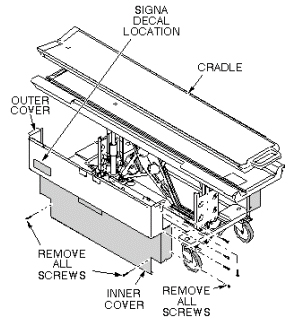
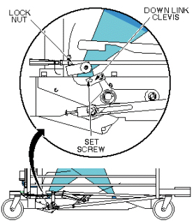
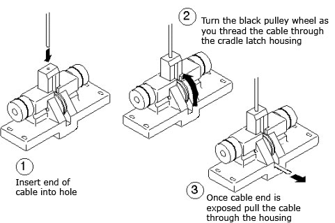
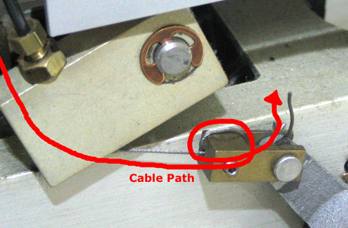

Operating Documentation
Direction 5440001-3, Rev# 6
Signa HDxt Service Methods
Module Version 4.0, Version Date 9/29/08
Operating Documentation |
| Required Persons | Preliminary Reqs | Procedure | Finalization |
|---|---|---|---|
| 1 or 2, depending on system | Not Applicable | 60-90 | Not Applicable |
This procedure is applicable to the following table products:
Signa Lightweight Patient Transport Table
Signa Oncology Patient Transport Table Option
Signa OR-Compatible Patient Transport Table Option
This procedure requires:
One person for a Signa Lightweight Patient Transport Table
Two people for a Signa Oncology or a Signa OR-Compatible Patient Transport Table Option
| Item | Qty | Effectivity | Part# | Manufacturer | |
|---|---|---|---|---|---|
| Cable | 1 | - | 46-271511p1 | - | |
| ||||
| To reduce the risk of exposing loose ferrous material to the magnetic field, it is mandatory that the patient transport is removed from magnet room during this procedure. | ||||
| ||||
| RISK OF PERSONAL INJURY! | ||||
| Lifting Mr parts, such as frus, toolkits and parts of the system without assistance (mechanical or additional personnel), can result in personal injury. | ||||
| the use of extra personnel is recommended to lift an object weighing more than 35 pounds AND less than 50 pounds. the use of mechanical lift assistance is required for objects weighing more than 90 pounds. |
| ||||
| RISK OF PERSONAL INJURY! | ||||
| Lifting Mr parts, such as frus, toolkits and parts of the system without assistance (mechanical or additional personnel), can result in personal injury. | ||||
| the use of extra personnel is recommended to lift an object weighing more than 35 pounds AND less than 50 pounds. the use of mechanical lift assistance is required for objects weighing more than 90 pounds. |
Undock patient transport and move it out of exam room.
Remove upper and lower left side covers (see Illustration 1).
Illustration 1: REMOVAL OF PATIENT TABLE COVERS

Remove cradle (see Illustration 2).
Illustration 2: PATIENT TRANSPORT CRADLE REMOVAL

Using an M2 Allen wrench, loosen set screw at down link clevis. See Illustration 3).
Illustration 3: MAIN CRADLE LATCH DOWN LINK LEVER

| ||||
| POTENTIAL BODY INJURY AND DAMAGE TO A CRITICAL COMPONENT OF THE PATIENT TABLE. | ||||
| FALLING OF UNSECURED OBJECT | ||||
| WHEN REMOVING PLATE THAT SECURES THE CRADLE LATCH HOUSING, MAKE SURE TO HOLD THE PLATE IN PLACE AS THE SCREWS ARE REMOVED. FAILURE TO DO SO WILL RESULT IN THE HOUSING FALLING ONCE NO LONGER SECURED TO THE PATIENT TABLE. |
Remove four bolts securing cradle latch housing and cradle latch cover (see Illustration 4).
Illustration 4: INTERLOCK CABLE AND MAIN CRADLE LATCH CABLE ROUTING

Unfasten cable end from Down Link Clevis (see Illustration 3).
Pull cable out of Cradle Latch Block on front of patient transport (see Illustration 4).
Insert new cable through head of Cradle Latch Block so once fully threaded, the swaged end fits into hole in latch pin. See Illustration 5 for details on installing cable.
Illustration 5: INSTALLATION OF MAIN CRADLE LATCH CABLE

Route cable through cable casing and insert through cable Down Link Clevis (see Illustration 3).
Loop cable twice through hole in Down Link Clevis (see Illustration 6).
Illustration 6: Cable Path through the Down Link Clevis

Using an M2 Allen wrench, tighten set screw (see Illustration 3).
Return patient transport to exam room.
Dock patient transport.
Adjust cable so that when docked, main latch will be flush with casting. Refer to procedure for Cradle Release Block Adjustment. Cut off excess length after adjustment is complete (see Illustration 6 for appropriate excess length). Secure adjustment by tightening set screw after adjustment is complete (see Illustration 3).
Replace cradle and upper and lower side covers. Note position of Signa logo on outer covers and position toward front of table (see Illustration 1).
No finalization steps.